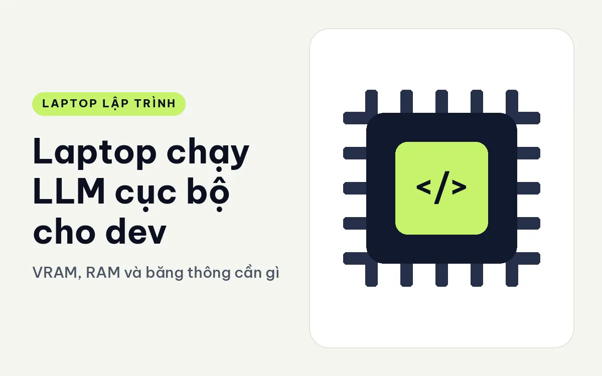
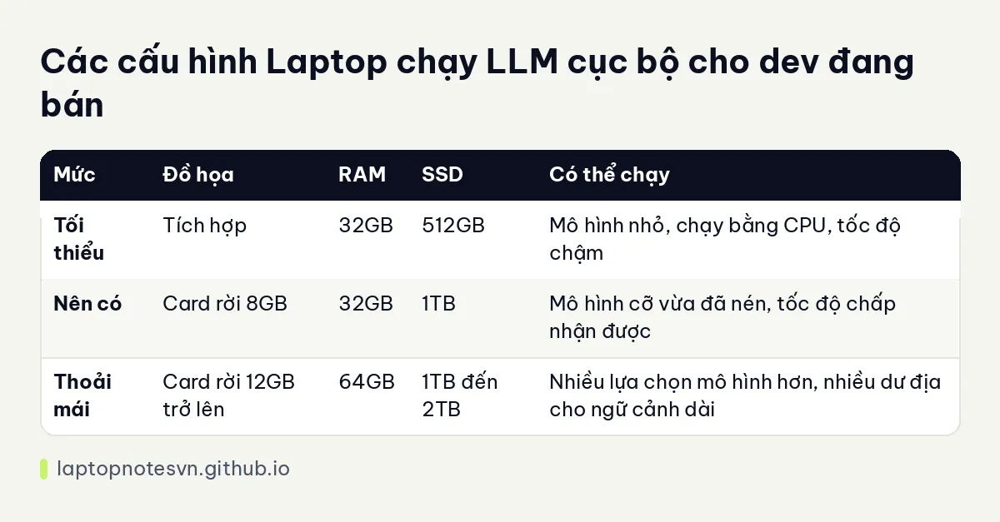

Laptop chạy LLM cục bộ cho dev - VRAM, RAM và băng thông cần gì

Chạy mô hình ngôn ngữ ngay trên laptop có lý do rất thực tế: mã nguồn không rời máy, dùng được khi mất mạng, và không bị tính phí theo lượt gọi. Đổi lại, bạn phải trả bằng phần cứng, và ở đây nút thắt khác hẳn những stack khác. Thứ quyết định không phải số nhân CPU mà là dung lượng bộ nhớ chứa trọng số mô hình.
Linh kiện quyết định tốc độ làm việc
VRAM của card đồ họa rời là chỗ chứa mô hình nhanh nhất. Nếu trọng số nằm gọn trong VRAM, mô hình sinh chữ nhanh. Khi trọng số lớn hơn VRAM, một phần phải đẩy sang RAM hệ thống và tốc độ giảm rõ. Vì vậy với LLM, bạn nên nhìn VRAM trước tên card.
RAM hệ thống là nơi chứa phần tràn. RAM lớn cho phép chạy mô hình lớn hơn VRAM, chỉ là chậm hơn. 32GB là mức khởi đầu, 64GB mở ra nhiều lựa chọn mô hình hơn. Nguyên tắc chung về RAM có ở bài lập trình viên cần bao nhiêu RAM.
Băng thông bộ nhớ ảnh hưởng tốc độ sinh chữ, vì mỗi từ sinh ra phải đọc lại phần lớn trọng số. Bộ nhớ nhanh hơn thì chạy nhanh hơn, đó là lý do bản LPDDR5x tốc độ cao có lợi hơn bản DDR5 thường khi so cùng dung lượng.
NPU trên chip Core Ultra phục vụ các tác vụ AI nhẹ trong hệ điều hành. Với mô hình ngôn ngữ cỡ lớn chạy qua công cụ phổ biến, card đồ họa vẫn là đường chính. Đừng mua máy chỉ vì con số TOPS của NPU.
SSD chứa trọng số. Mỗi mô hình vài gigabyte đến vài chục gigabyte, nên thử nhiều mô hình là đầy ổ rất nhanh. 1TB là mức nên có.
Mức cấu hình theo nhu cầu
| Mức | Đồ họa | RAM | SSD | Có thể chạy |
|---|---|---|---|---|
| Tối thiểu | Tích hợp | 32GB | 512GB | Mô hình nhỏ, chạy bằng CPU, tốc độ chậm |
| Nên có | Card rời 8GB | 32GB | 1TB | Mô hình cỡ vừa đã nén, tốc độ chấp nhận được |
| Thoải mái | Card rời 12GB trở lên | 64GB | 1TB đến 2TB | Nhiều lựa chọn mô hình hơn, nhiều dư địa cho ngữ cảnh dài |
Kích cỡ mô hình phù hợp phụ thuộc cách nén và độ dài ngữ cảnh bạn dùng, nên hãy đọc yêu cầu bộ nhớ của từng mô hình cụ thể.

Gợi ý máy cụ thể cho LLM cục bộ
Dell Pro Max 16 Premium có bản Core Ultra 9 285H vPro, 64GB LPDDR5x 8400MHz, SSD 2TB Gen4, card RTX PRO 3000 12GB, màn UHD+ OLED cảm ứng. Đây là bản nhiều VRAM nhất trong nhóm máy 16 inch ở đây, và băng thông bộ nhớ khá.
Bản thấp hơn của cùng dòng dùng Core Ultra 7 255H, 32GB, SSD 1TB và card RTX PRO 3000 12GB, cũng có 12GB VRAM với RAM ít hơn. Ghi chú riêng ở Pro Max 16 Premium cho lập trình.
Dell Pro Max 18 Plus có Core Ultra 9 285HX 24 nhân, 64GB DDR5 6400MHz, SSD 1TB Gen4, card RTX PRO 3000 12GB, màn 18 inch. Cùng 12GB VRAM, nhưng CPU 24 nhân hữu ích khi phần tràn sang RAM và khi bạn làm việc khác song song. Máy nặng 3,25 kg.
ThinkPad P1 Gen 8 có bản Core Ultra 7 255H, 32GB, SSD 1TB và card RTX PRO 2000 8GB, hợp mức nên có. Bản cao hơn có Core Ultra 9 285H, 64GB và SSD 2TB.
Cài đặt và dùng sao cho bền
Chọn mô hình vừa với VRAM. Mô hình nằm gọn trong VRAM chạy tốt hơn nhiều so với mô hình tràn sang RAM. Hãy thử vài kích cỡ và cách nén khác nhau để tìm điểm cân bằng giữa chất lượng và tốc độ.
Cập nhật driver card đồ họa. Công cụ chạy mô hình dựa vào driver, và phiên bản cũ có thể gây lỗi hoặc chậm.
Theo dõi nhiệt và nguồn. Sinh chữ kéo dài tải card liên tục. Cắm sạc đủ công suất và đặt máy thoáng khí.
Giới hạn ngữ cảnh. Ngữ cảnh càng dài càng tốn bộ nhớ. Nếu hết VRAM, giảm độ dài ngữ cảnh trước khi nghĩ đến đổi mô hình.
Giữ dữ liệu nhạy cảm cục bộ. Đây là lợi ích chính của stack này, nên đừng cấu hình công cụ gửi dữ liệu ra ngoài mà không biết.
Cân nhắc dịch vụ đám mây cho mô hình rất lớn. Laptop hợp mô hình cỡ nhỏ đến vừa. Mô hình cực lớn vẫn cần máy chủ chuyên dụng.
Mua gì nếu chỉ thử nghiệm
Nếu bạn mới tò mò và chưa chắc sẽ dùng thường xuyên, đừng mua máy chỉ vì LLM. Hãy chọn máy cho công việc chính của mình, rồi chạy thử mô hình nhỏ trên chính máy đó. Mô hình cỡ nhỏ đã nén chạy được bằng CPU và 32GB RAM, dù tốc độ không nhanh. Từ trải nghiệm đó bạn sẽ biết mình thiếu VRAM hay thiếu thứ gì khác trước khi chi thêm.
Ngược lại, nếu bạn đã dùng trợ lý AI hằng ngày và có quy định giữ mã trong công ty, card 12GB VRAM với 64GB RAM là cấu hình đáng cân nhắc, vì nó cho bạn chọn nhiều mô hình mà không phải đổi máy sớm.
Đăng ngày 09/11/2026